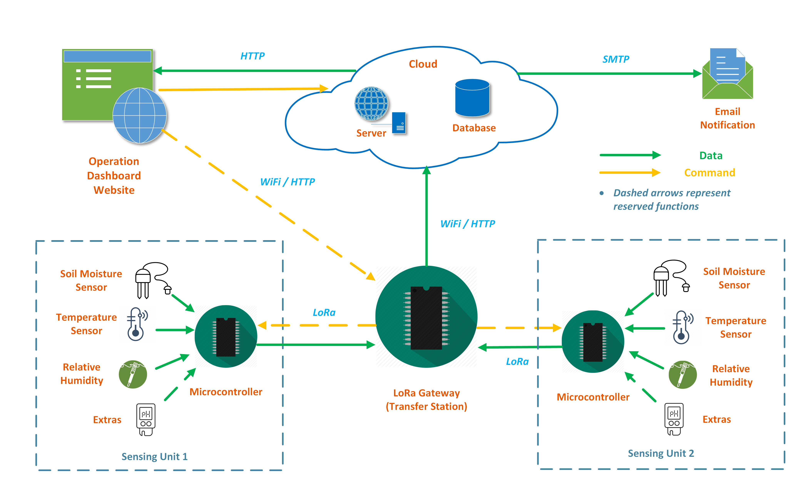
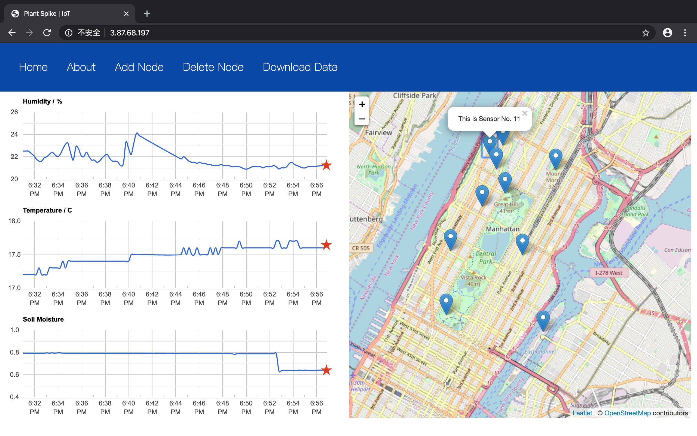
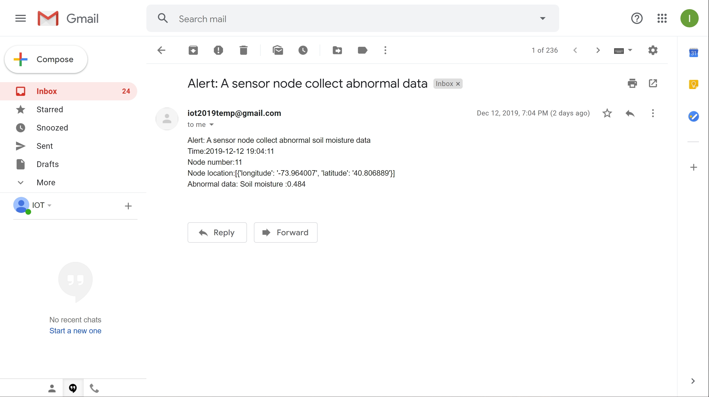

Sensing the Health of Tree-pit Soil
A long-range, low-power, wireless soil conditions sensing system was developed in this project. The system can measure relative humidity, temperature and soil moisture simultaneously over long duration and can be scaled up to measure at multiple locations. The data are collected from the sensors and transferred to the gateway via LoRa wireless communication module, then the data are uploaded to a cloud database. The real time soil conditions at multiple locations can be viewed on a website, which also provides functions including: registering new sensing unit(s), removing old unit(s), downloading the complete dataset. A simple prediction method was also introduced into the system, when the measured value deviates from the predicted value for a certain threshold, an alert will be send to users via email.
Motivation
- The size of the traditional soil condition sensors for field measurement are relatively big.
- If you want to deploy these sensors for a long time, it will require a lot of energy, which is hard to be powered solely by a battery without replacement.
- Usually, these sensors don't have wireless communication capacity.
- The health of tree-pit soil is interrelated to the street tree's ability to mitigate urban stormwater runoff. The proposed system can help advance understanding of this mutual mechanism.
- The proposed system also has many other application potentials, including: smart farm, climate modelling and adaptation, subsurface waste management and groundwater remediation, etc.
System
Architecture
System Diagram
As shown in the system diagram, the system consists of four main components: 1) sensing unit, 2) LoRa gateway 3) cloud server and database, and 4) operation dashboard website.
Technical Components
- Sensing Unit:
A sensing unit collects data from separate sensors, then send the data to a LoRa gateway.
It consists of a ESP8266 microcontroller, a LoRa wireless communication module as transmitter, a soil moisture sensor and another sensor measuring temperature and relative humidity. - LoRa Gateway:
A LoRa gateway consists of a ESP8266 microcontroller and a LoRa wireless communication module as receiver.
It functions as a transfer station, which receives the data from the sensing units, then send the data to the cloud database through the WiFi module on the microcontroller. - Cloud Server and Database:
The cloud server was constructed using Flask web framework in Python, the database was established using MangoDB database program. Both the server and the database were hosted on an AWS EC2 instance.
The database stores the locations of the sensing units, as well as the measured data.
The server accepts HTTP requests from the operation dashboard website, the sends back the corresponding responses. A simple prediction method (moving average) was also introduced into the server, when the measured value deviates from the prediction for a certain threshold, an alert email will be sent to users. - Operation Dashboard Website:
The operation dashboard website provides a friendly user interface, on which you can view the real time data of each sensing unit by simply clicking it on the map. You can also conveniently 1) add new unit by providing its ID number and location, 2) remove sensing unit by providing its ID number, 3) download the complete dataset.
Prototype


A sensing unit is shown in the left picture above, and a LoRa gateway is shown in the right picture.

A prototype system in operation is shown in the picture above.
Results
The layout of the operation dashboard website is shown in the picture above.
 
As shown in the left picture above, a message showing the ID number of the sensing unit will popup after the user click the unit on the map.
For demonstration purpose, besides the actual prototype sensing unit, a bunch of virtual units were generated, as shown on the map.
An email alert will be triggered when the measured value deviates from the predicted value for a certain threshold.
An example is shown in the right picture above.

For low-power feature, usually, the sensing unit works in deep sleep mode and will wake up every 15 minutes.
When it's in deep sleep mode, the current will only be 20 uA. If using a 2500 mAh battery, in theory, it can work continuously for years.
For transmission range, as tested in city environment, it was found the sensing unit could talk to the gateway for at least 100 meters.
If the configuration can be improved further in ways like replacing the non-directional antenna to a directional one, this range can be even longer.
And in wide open area, the transmission range can potentially reach to several kilometers.
References
- Chen, Yujuan, Susan D. Day, Abbey F. Wick, and Kevin J. McGuire. 2014. “Influence of Urban Land Development and Subsequent Soil Rehabilitation on Soil Aggregates, Carbon, and Hydraulic Conductivity.” Science of the Total Environment 494–495(October 2014): 329–36.
- Elliott, R.M., E.R. Adkins, P.J. Culligan, and M.I. Palmer. 2018. “Stormwater Infiltration Capacity of Street Tree Pits: Quantifying the Influence of Different Design and Management Strategies in New York City.” Ecological Engineering 111.
- Hakimdavar, R., P.J. Culligan, A. Guido, and W.R. McGillis. 2016. “The Soil Water Apportioning Method (SWAM): An Approach for Long-Term, Low-Cost Monitoring of Green Roof Hydrologic Performance.” Ecological Engineering 93.
- Mullaney, Jennifer, Terry Lucke, and Stephen J. Trueman. 2015. “A Review of Benefits and Challenges in Growing Street Trees in Paved Urban Environments.” Landscape and Urban Planning 134: 157–66.
Our Team
Chenye Yang
- M.S. Student in Electrical Engineering, Columbia University
- B.Eng. in Automation (Honors Program), Xi'an Jiaotong University
Haokai Zhao
- Ph.D. Student in Civil Engineering and Engineering Mechanics, Columbia University
- M.S. in Earth and Environmental Engineering, Columbia University
- B.Eng. in Electrical Engineering and Automation, Tongji University
Zhuoyue Xing
- M.S. Student in Electrical Engineering, Columbia University
- B.Eng. in Automation, Xi'an Jiaotong University
Contact
Chenye Yang: cy2540@columbia.edu
Haokai Zhao: hz2477@columbia.edu
Zhuoyue Xing: zx2269@columbia.edu
Columbia University Department of Electrical Engineering
Instructor: Professsor Xiaofan (Fred) Jiang